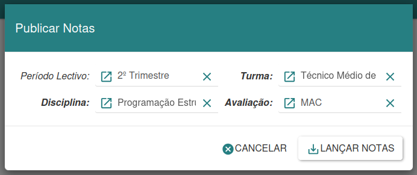
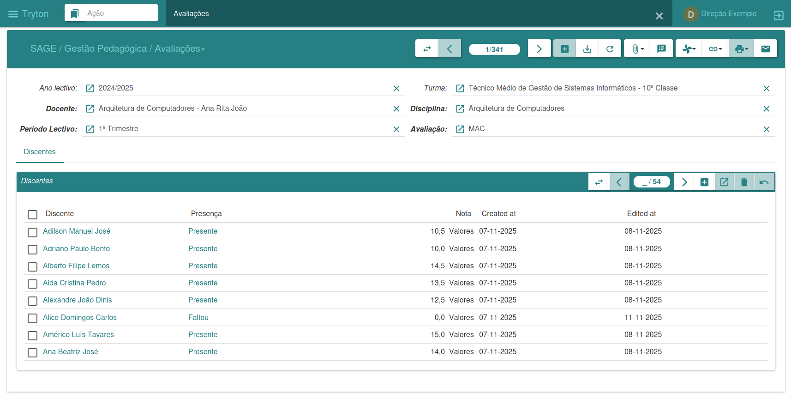
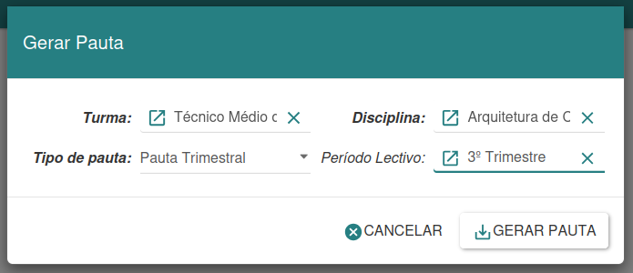
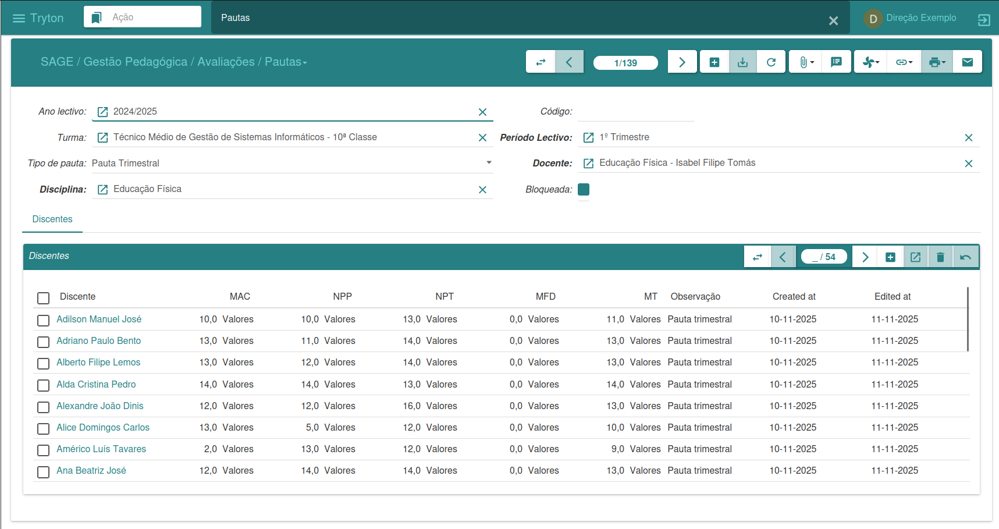
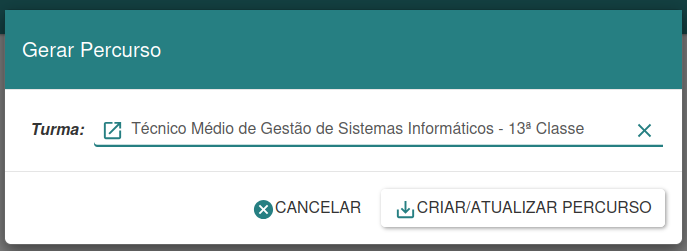

Assessment Management
Assessment Management
The Assessments menu is responsible for managing the assessments of students in a given class. Here, you can enter grades, create grade sheets, and generate students' academic transcripts.
Publishing Grades
The grade publishing assistant simplifies the process of assigning grades to students, making it easy to generate a list of students based on the grades entered.

To create this list, you need to specify the term, class, subject, and assessment for which you want to generate the list. Then, click on "Post Grades," resulting in a list of all students enrolled in the subject.
If you do not wish to proceed, you have the option to click "Cancel." This tool simplifies the grade posting process.
Avaliations
Assessment management is conducted through this interface, allowing the viewing of all assessments and, for each one, a list of students with their respective grades.

To assign grades, simply select a specific assessment, search for the desired student, and then enter or change the corresponding grade. After making the changes, click "Save" to record the changes. This approach offers an effective way to manage and update student grades during the academic assessment process.
Generate Schedule
The schedule generation wizard allows you to create schedules dynamically, requiring only the input of the necessary data. The schedule is automatically generated with all calculations performed based on the defined formulas.

To create a new agenda, you need to provide the required information. In the Agenda Type option, select the desired format. Then, click "Generate" to create the agenda, or "Cancel" if you wish to cancel the process.
Schedule
Schedule management is done through this interface, where you can view all the grades that have already been generated. For each grade, a list of students with their respective grades is available, providing a comprehensive view of each student's academic performance.

This interface facilitates the analysis and monitoring of assessments over time, allowing for effective management of information related to student grades.
Generate Academic Path
The academic path generation assistant makes it possible to record the academic activities of a specific class, that is, the performance of the students enrolled in it.

This tool offers an efficient way to document and analyze academic progress over time, providing a complete overview of the educational path of the students in the class.
Academic Path
The academic record allows for the storage of students' performance throughout a given academic year, providing crucial information for making decisions regarding student progression or retention.

This tool provides a detailed analysis of academic performance, assisting in the evaluation of student progress and the definition of their educational pathways.